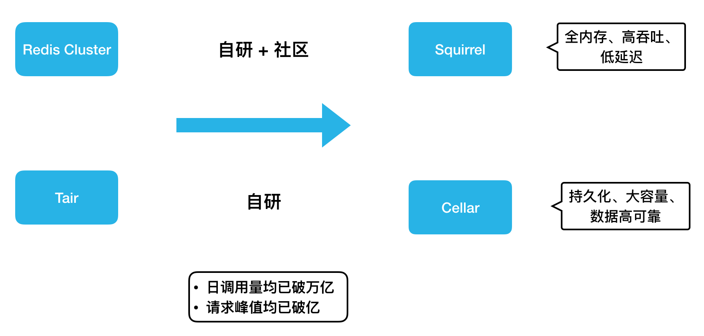
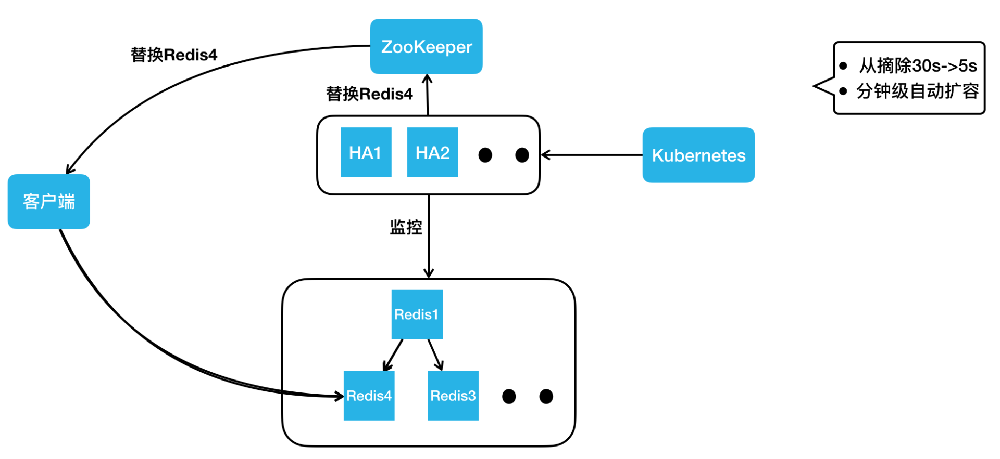
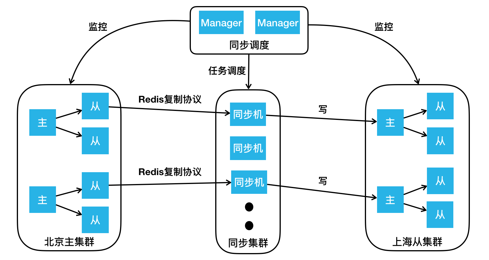
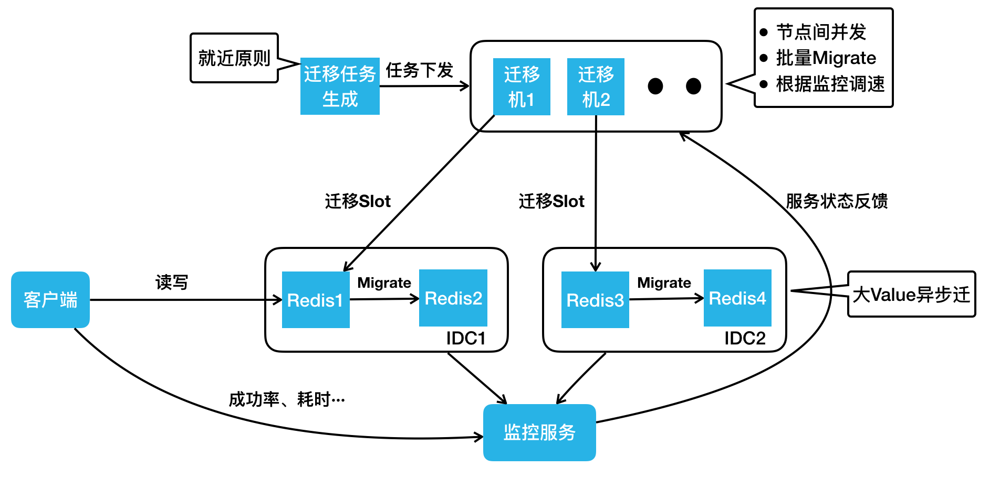
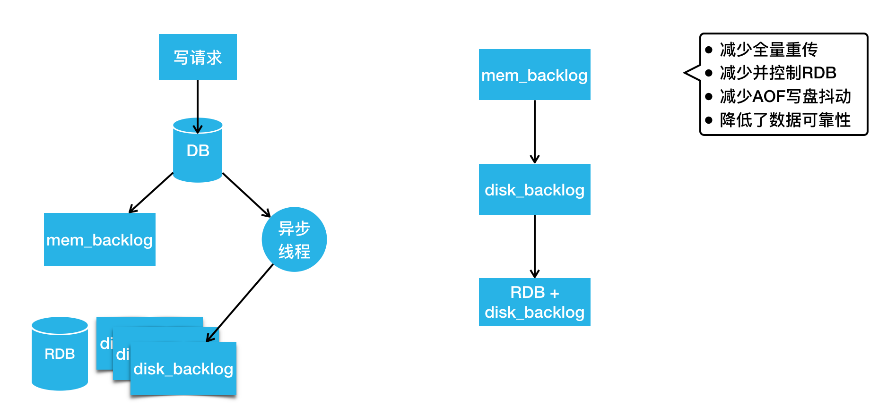
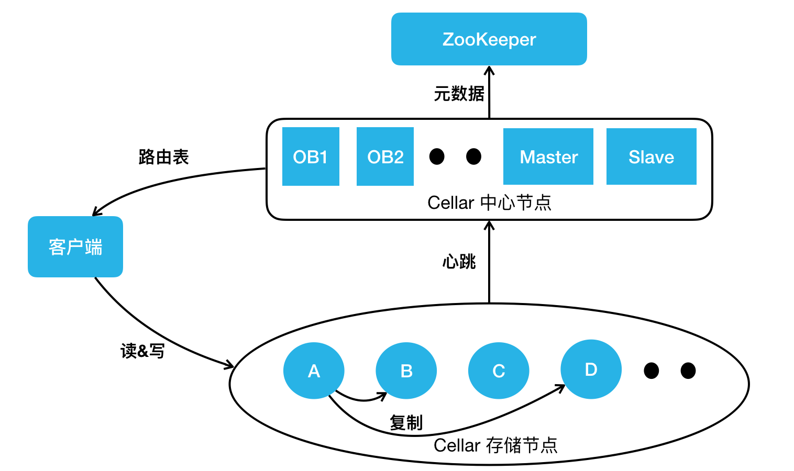
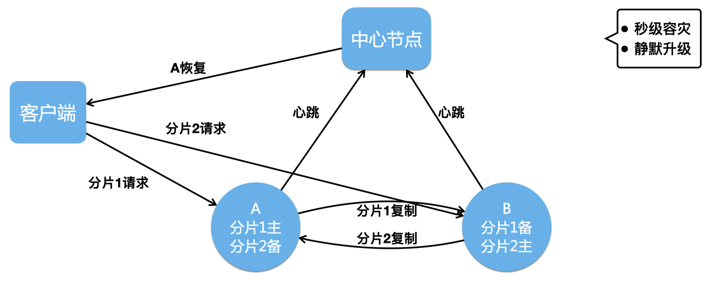
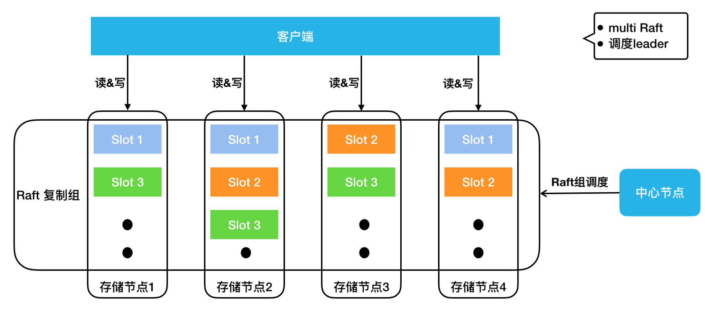
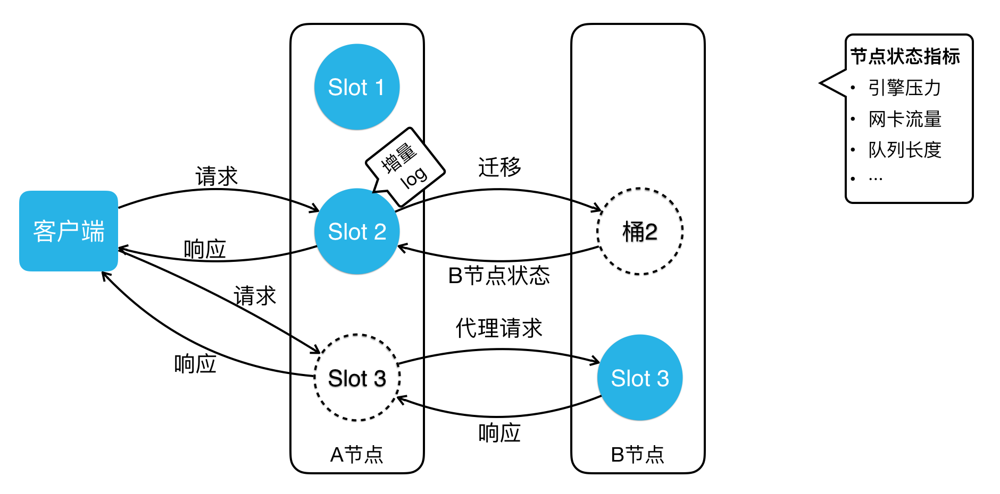

- AQS 万字图文全面解析.md.html
- Docker 镜像构建原理及源码分析.md.html
- ElasticSearch 小白从入门到精通.md.html
- JVM CPU Profiler技术原理及源码深度解析.md.html
- JVM 垃圾收集器.md.html
- JVM 面试的 30 个知识点.md.html
- Java IO 体系、线程模型大总结.md.html
- Java NIO浅析.md.html
- Java 面试题集锦（网络篇）.md.html
- Java-直接内存 DirectMemory 详解.md.html
- Java中9种常见的CMS GC问题分析与解决（上）.md.html
- Java中9种常见的CMS GC问题分析与解决（下）.md.html
- Java中的SPI.md.html
- Java中的ThreadLocal.md.html
- Java线程池实现原理及其在美团业务中的实践.md.html
- Java魔法类：Unsafe应用解析.md.html
- Kafka 源码阅读笔记.md.html
- Kafka、ActiveMQ、RabbitMQ、RocketMQ 区别以及高可用原理.md.html
- MySQL · 引擎特性 · InnoDB Buffer Pool.md.html
- MySQL · 引擎特性 · InnoDB IO子系统.md.html
- MySQL · 引擎特性 · InnoDB 事务系统.md.html
- MySQL · 引擎特性 · InnoDB 同步机制.md.html
- MySQL · 引擎特性 · InnoDB 数据页解析.md.html
- MySQL · 引擎特性 · InnoDB崩溃恢复.md.html
- MySQL · 引擎特性 · 临时表那些事儿.md.html
- MySQL 主从复制 半同步复制.md.html
- MySQL 主从复制 基于GTID复制.md.html
- MySQL 主从复制.md.html
- MySQL 事务日志(redo log和undo log).md.html
- MySQL 亿级别数据迁移实战代码分享.md.html
- MySQL 从一条数据说起-InnoDB行存储数据结构.md.html
- MySQL 地基基础：事务和锁的面纱.md.html
- MySQL 地基基础：数据字典.md.html
- MySQL 地基基础：数据库字符集.md.html
- MySQL 性能优化：碎片整理.md.html
- MySQL 故障诊断：一个 ALTER TALBE 执行了很久，你慌不慌？.md.html
- MySQL 故障诊断：如何在日志中轻松定位大事务.md.html
- MySQL 故障诊断：教你快速定位加锁的 SQL.md.html
- MySQL 日志详解.md.html
- MySQL 的半同步是什么？.md.html
- MySQL中的事务和MVCC.md.html
- MySQL事务_事务隔离级别详解.md.html
- MySQL优化：优化 select count().md.html
- MySQL共享锁、排他锁、悲观锁、乐观锁.md.html
- MySQL的MVCC（多版本并发控制）.md.html
- QingStor 对象存储架构设计及最佳实践.md.html
- RocketMQ 面试题集锦.md.html
- SnowFlake 雪花算法生成分布式 ID.md.html
- Spring Boot 2.x 结合 k8s 实现分布式微服务架构.md.html
- Spring Boot 教程：如何开发一个 starter.md.html
- Spring MVC 原理.md.html
- Spring MyBatis和Spring整合的奥秘.md.html
- Spring 帮助你更好的理解Spring循环依赖.md.html
- Spring 循环依赖及解决方式.md.html
- Spring中眼花缭乱的BeanDefinition.md.html
- Vert.x 基础入门.md.html
- eBay 的 Elasticsearch 性能调优实践.md.html
- 不可不说的Java“锁”事.md.html
- 互联网并发限流实战.md.html
- 从ReentrantLock的实现看AQS的原理及应用.md.html
- 从SpringCloud开始，聊微服务架构.md.html
- 全面了解 JDK 线程池实现原理.md.html
- 分布式一致性理论与算法.md.html
- 分布式一致性算法 Raft.md.html
- 分布式唯一 ID 解析.md.html
- 分布式链路追踪：集群管理设计.md.html
- 动态代理种类及原理，你知道多少？.md.html
- 响应式架构与 RxJava 在有赞零售的实践.md.html
- 大数据算法——布隆过滤器.md.html
- 如何优雅地记录操作日志？.md.html
- 如何设计一个亿级消息量的 IM 系统.md.html
- 异步网络模型.md.html
- 当我们在讨论CQRS时，我们在讨论些神马？.md.html
- 彻底理解 MySQL 的索引机制.md.html
- 最全的 116 道 Redis 面试题解答.md.html
- 有赞权限系统(SAM).md.html
- 有赞零售中台建设方法的探索与实践.md.html
- 服务注册与发现原理剖析（Eureka、Zookeeper、Nacos）.md.html
- 深入浅出Cache.md.html
- 深入理解 MySQL 底层实现.md.html
- 漫画讲解 git rebase VS git merge.md.html
- 生成浏览器唯一稳定 ID 的探索.md.html
- 缓存 如何保证缓存与数据库的双写一致性？.md.html
- 网易严选怎么做全链路监控的？.md.html
- 美团万亿级 KV 存储架构与实践.md.html
- 美团点评Kubernetes集群管理实践.md.html
- 美团百亿规模API网关服务Shepherd的设计与实现.md.html
- 解读《阿里巴巴 Java 开发手册》背后的思考.md.html
- 认识 MySQL 和 Redis 的数据一致性问题.md.html
- 进阶：Dockerfile 高阶使用指南及镜像优化.md.html
- 铁总在用的高性能分布式缓存计算框架 Geode.md.html
- 阿里云PolarDB及其共享存储PolarFS技术实现分析（上）.md.html
- 阿里云PolarDB及其共享存储PolarFS技术实现分析（下）.md.html
- 面试最常被问的 Java 后端题.md.html
- 领域驱动设计在互联网业务开发中的实践.md.html
- 领域驱动设计的菱形对称架构.md.html
- 高效构建 Docker 镜像的最佳实践.md.html
- 捐赠
美团万亿级 KV 存储架构与实践
KV 存储作为美团一项重要的在线存储服务，承载了在线服务每天万亿级的请求量。在 2019 年 QCon 全球软件开发大会（上海站）上，美团高级技术专家齐泽斌分享了《美团点评万亿级 KV 存储架构与实践》，本文系演讲内容的整理，主要分为四个部分：第一部分讲述了美团 KV 存储的发展历程；第二部分阐述了内存 KV Squirrel 架构和实践；第三部分介绍了持久化 KV Cellar 架构和实践；最后分享了未来的发展规划和业界新趋势。
美团点评 KV 存储发展历程
美团第一代的分布式 KV 存储如下图左侧的架构所示，相信很多公司都经历过这个阶段。在客户端内做一致性哈希，在后端部署很多的 Memcached 实例，这样就实现了最基本的 KV 存储分布式设计。但这样的设计存在很明显的问题：比如在宕机摘除节点时，会丢数据，缓存空间不够需要扩容，一致性哈希也会丢失一些数据等等，这样会给业务开发带来的很多困扰。

随着 Redis 项目的成熟，美团也引入了 Redis 来解决我们上面提到的问题，进而演进出来如上图右侧这样一个架构。大家可以看到，客户端还是一样，采用了一致性哈希算法，服务器端变成了 Redis 组成的主从结构。当任何一个节点宕机，我们可以通过 Redis 哨兵完成 Failover，实现高可用。但有一个问题还是没有解决，如果扩缩容的话，一致性哈希仍然会丢数据，那么这个问题该如何解决呢？

这个时候，我们发现有了一个比较成熟的 KV 存储开源项目：阿里 Tair 。2014年，我们引入了 Tair 来满足业务 KV 存储方面的需求。Tair 开源版本的架构主要分成三部分：上图下边是存储节点，存储节点会上报心跳到它的中心节点，中心节点内部有两个配置管理节点，会监控所有的存储节点。当有任何存储节点宕机或者扩容时，它会做集群拓扑的重新构建。当客户端启动时，它会直接从中心节点拉来一个路由表。这个路由表简单来说就是一个集群的数据分布图，客户端根据路由表直接去存储节点读写。针对之前 KV 的扩容丢数据问题，它也有数据迁移机制来保证数据的完整性。
但是，我们在使用的过程中，还遇到了一些其他问题，比如中心节点虽然是主备高可用的，但实际上它没有类似于分布式仲裁的机制，所以在网络分割的情况下，它是有可能发生“脑裂”的，这个也给我们的业务造成过比较大的影响。另外，在容灾扩容时，也遇到过数据迁移影响到业务可用性的问题。另外，我们之前用过 Redis ，业务会发现 Redis 的数据结构特别丰富，而 Tair 还不支持这些数据结构。虽然我们用 Tair 解决了一些问题，但是 Tair 也无法完全满足业务需求。毕竟，在美团这样一个业务规模较大和业务复杂度较高的场景下，很难有开源系统能很好地满足我们的需求。最终，我们决定在已应用的开源系统之上进行自研。

刚好在2015 年， Redis 官方正式发布了集群版本 Redis Cluster。所以，我们紧跟社区步伐，并结合内部需求做了很多开发工作，演进出了全内存、高吞吐、低延迟的 KV 存储 Squirrel。另外，基于 Tair，我们还加入了很多自研的功能，演进出持久化、大容量、数据高可靠的 KV 存储 Cellar 。因为 Tair 的开源版本已经有四五年没有更新了，所以，Cellar 的迭代完全靠美团自研，而 Redis 社区一直很活跃。总的来说，Squirrel 的迭代是自研和社区并重，自研功能设计上也会尽量与官方架构进行兼容。后面大家可以看到，因为这些不同，Cellar 和 Squirrel 在解决同样的问题时也选取了不同的设计方案。
这两个存储其实都是 KV 存储领域不同的解决方案。在实际应用上，如果业务的数据量小，对延迟敏感，我们建议大家用 Squirrel ；如果数据量大，对延迟不是特别敏感，我们建议用成本更低的 Cellar 。目前这两套 KV 存储系统在美团内部每天的调用量均已突破万亿，它们的请求峰值也都突破了每秒亿级。
内存 KV Squirrel 架构和实践
在开始之前，本文先介绍两个存储系统共通的地方。比如分布式存储的经典问题：数据是如何分布的？这个问题在 KV 存储领域，就是 Key 是怎么分布到存储节点上的。这里 Squirrel 跟 Cellar 是一样的。当我们拿到一个 Key 后，用固定的哈希算法拿到一个哈希值，然后将哈希值对 Slot 数目取模得到一个Slot id，我们两个 KV 现在都是预分片16384个 Slot 。得到 Slot id 之后，再根据路由表就能查到这个 Slot 存储在哪个存储节点上。这个路由表简单来说就是一个 Slot 到存储节点的对照表。

KV 数据分布介绍
接下来讲一下对高可用架构的认知，个人认为高可用可以从宏观和微观两个角度来看。从宏观的角度来看，高可用就是指容灾怎么做。比如说挂掉了一个节点，你该怎么做？一个机房或者说某个地域的一批机房宕机了，你该怎么做？而从微观的角度看，高可用就是怎么能保证端到端的高成功率。我们在做一些运维升级或者扩缩容数据迁移的时候，能否做到业务请求的高可用？ 本文也会从宏观和微观两个角度来分享美团做的一些高可用工作。

Squirrel 架构
上图就是我们的 Squirrel 架构。中间部分跟 Redis 官方集群是一致的。它有主从的结构， Redis 实例之间通过 Gossip 协议去通信。我们在右边添加了一个集群调度平台，包含调度服务、扩缩容服务和高可用服务等，它会去管理整个集群，把管理结果作为元数据更新到 ZooKeeper。我们的客户端会订阅 ZooKeeper 上的元数据变更，实时获取到集群的拓扑状态，直接在 Redis 集群进行读写操作。
Squirrel 节点容灾
然后再看一下 Squirrel 容灾怎么做。对于 Redis 集群而言，节点宕机已经有完备的处理机制了。官方提供的方案，任何一个节点从宕机到被标记为 FAIL 摘除，一般需要经过 30 秒。主库的摘除可能会影响数据的完整性，所以，我们需要谨慎一些。但是对于从库呢？我们认为这个过程完全没必要。另一点，我们都知道内存的 KV 存储数据量一般都比较小。对于业务量很大的公司来说，它往往会有很多的集群。如果发生交换机故障，会影响到很多的集群，宕机之后去补副本就会变得非常麻烦。为了解决这两个问题，我们做了 HA 高可用服务。
它的架构如下图所示，它会实时监控集群的所有节点。不管是网络抖动，还是发生了宕机（比如说 Redis 2 ），它可以实时更新 ZooKeeper ，告诉 ZooKeeper 去摘除 Redis 2 ，客户端收到消息后，读流量就直接路由到 Redis 3上。如果 Redis 2 只是几十秒的网络抖动，过几十秒之后，如果 HA 节点监控到它恢复后，会把它重新加回。

Squirrel—节点容灾
如果过了一段时间，HA 判断它属于一个永久性的宕机，HA 节点会直接从 Kubernetes 集群申请一个新的 Redis 4 容器实例，把它加到集群里。此时，拓扑结构又变成了一主两从的标准结构，HA 节点更新完集群拓扑之后，就会去写 ZooKeeper 通知客户端去更新路由，客户端就能到 Redis 4 这个新从库上进行读操作。

通过上述方案，我们把从库的摘除时间从 30 秒降低到了 5 秒。另外，我们通过 HA 自动申请容器实例加入集群的方式，把宕机补副本变成了一个分钟级的自动操作，不需要任何人工的介入。
Squirrel 跨地域容灾
我们解决了单节点宕机的问题，那么跨地域问题如何解决呢？我们首先来看下跨地域有什么不同。第一，相对于同地域机房间的网络而言，跨地域专线很不稳定；第二，跨地域专线的带宽是非常有限且昂贵的。而集群内的复制没有考虑极端的网络环境。假如我们把主库部署到北京，两个从库部署在上海，同样一份数据要在北上专线传输两次，这样会造成巨大的专线带宽浪费。另外，随着业务的发展和演进，我们也在做单元化部署和异地多活架构。用官方的主从同步，满足不了我们的这些需求。基于此，我们又做了集群间的复制方案。

如上图所示，这里画出了北京的主集群以及上海的从集群，我们要做的是通过集群同步服务，把北京主集群的数据同步到上海从集群上。按照流程，首先要向我们的同步调度模块下发“在两个集群间建立同步链路”的任务，同步调度模块会根据主从集群的拓扑结构，把主从集群间的同步任务下发到同步集群，同步集群收到同步任务后会扮成 Redis 的 Slave，通过 Redis 的复制协议，从主集群上的从库拉取数据，包括 RDB以及后续的增量变更。同步机收到数据后会把它转成客户端的写命令，写到上海从集群的主节点里。通过这样的方式，我们把北京主集群的数据同步到了上海的从集群。同样的，我们要做异地多活也很简单，再加一个反向的同步链路，就可以实现集群间的双向同步。
接下来我们讲一下如何做好微观角度的高可用，也就是保持端到端的高成功率。对于 Squirrel ，主要讲如下三个影响成功率的问题：
- 数据迁移造成超时抖动。
- 持久化造成超时抖动。
- 热点 Key 请求导致单节点过载。
Squirrel 智能迁移
对于数据迁移，我们主要遇到三个问题：
- Redis Cluster 虽然提供了数据迁移能力，但是对于要迁哪些 Slot，Slot 从哪迁到哪，它并不管。
- 做数据迁移的时候，大家都想越快越好，但是迁移速度过快又可能影响业务正常请求。
- Redis 的 Migrate 命令会阻塞工作线程，尤其在迁移大 Value 的时候会阻塞特别久。
为了解决这些问题，我们做了全新的迁移服务。

下面我们按照工作流，讲一下它是如何运行的。首先生成迁移任务，这步的核心是“就近原则”，比如说同机房的两个节点做迁移肯定比跨机房的两个节点快。迁移任务生成之后，会把任务下发到一批迁移机上。迁移机迁移的时候，有这样几个特点：
- 第一，会在集群内迁出节点间做并发，比如同时给 Redis 1、Redis 3 下发迁移命令。
- 第二，每个 Migrate 命令会迁移一批 Key。
- 第三，我们会用监控服务去实时采集客户端的成功率、耗时，服务端的负载、QPS 等，之后把这个状态反馈到迁移机上。迁移数据的过程就类似 TCP 慢启动的过程，它会把速度一直往上加，若出现请求成功率下降等情况，它的速度就会降低，最终迁移速度会在动态平衡中稳定下来，这样就达到了最快速的迁移，同时又尽可能小地影响业务的正常请求。
接下来，我们看一下大 Value 的迁移，我们实现了一个异步 Migrate 命令，该命令执行时，Redis 的主线程会继续处理其他的正常请求。如果此时有对正在迁移 Key 的写请求过来，Redis 会直接返回错误。这样最大限度保证了业务请求的正常处理，同时又不会阻塞主线程。
Squirrel 持久化重构
Redis 主从同步时会生成 RDB。生成 RDB 的过程会调用 Fork 产生一个子进程去写数据到硬盘，Fork 虽然有操作系统的 COW 机制，但是当内存用量达到 10 G 或 20 G 时，依然会造成整个进程接近秒级的阻塞。这对在线业务来说几乎是无法接受的。我们也会为数据可靠性要求高的业务去开启 AOF，而开 AOF 就可能因 IO 抖动造成进程阻塞，这也会影响请求成功率。对官方持久化机制的这两个问题，我们的解决方案是重构持久化机制。

上图是我们最新版的 Redis 持久化机制，写请求会先写到 DB 里，然后写到内存 Backlog，这跟官方是一样的。同时它会把请求发给异步线程，异步线程负责把变更刷到硬盘的 Backlog 里。当硬盘 Backlog 过多时，我们会主动在业务低峰期做一次 RDB ，然后把 RDB 之前生成的 Backlog 删除。
如果这时候我们要做主从同步，去寻找同步点的时候，该怎么办？第一步还是跟官方一样，我们会从内存 Backlog 里找有没有要求的同步点，如果没有，我们会去硬盘 Backlog 找同步点。由于硬盘空间很大，硬盘 Backlog 可以存储特别多的数据，所以很少会出现找不到同步点的情况。如果硬盘 Backlog 也没有，我们就会触发一次类似于全量重传的操作，但这里的全量重传是不需要当场生成 RDB 的，它可以直接用硬盘已存的 RDB 及其之后的硬盘 Backlog 完成全量重传。通过这个设计，我们减少了很多的全量重传。另外，我们通过控制在低峰区生成 RDB ，减少了很多 RDB 造成的抖动。同时，我们也避免了写 AOF 造成的抖动。不过，这个方案因为写 AOF 是完全异步的，所以会比官方的数据可靠性差一些，但我们认为这个代价换来了可用性的提升，这是非常值得的。
Squirrel 热点 Key
下面看一下 Squirrel 的热点 Key 解决方案。如下图所示，普通主、从是一个正常集群中的节点，热点主、从是游离于正常集群之外的节点。我们看一下它们之间怎么发生联系。

当有请求进来读写普通节点时，节点内会同时做请求 Key 的统计。如果某个 Key 达到了一定的访问量或者带宽的占用量，会自动触发流控以限制热点 Key 访问，防止节点被热点请求打满。同时，监控服务会周期性的去所有 Redis 实例上查询统计到的热点 Key。如果有热点，监控服务会把热点 Key 所在 Slot 上报到我们的迁移服务。迁移服务这时会把热点主从节点加入到这个集群中，然后把热点 Slot 迁移到这个热点主从上。因为热点主从上只有热点 Slot 的请求，所以热点 Key的处理能力得到了大幅提升。通过这样的设计，我们可以做到实时的热点监控，并及时通过流控去止损；通过热点迁移，我们能做到自动的热点隔离和快速的容量扩充。
持久化 KV Cellar 架构和实践
下面看一下持久化 KV Cellar 的架构和实践。下图是我们最新的 Cellar 架构图。

跟阿里开源的 Tair 主要有两个架构上的不同。第一个是OB，第二个是 ZooKeeper。我们的 OB 跟 ZooKeeper 的 Observer 是类似的作用，提供 Cellar 中心节点元数据的查询服务。它可以实时与中心节点的 Master 同步最新的路由表，客户端的路由表都是从 OB 去拿。 这样做的好处主要有两点，第一，把大量的业务客户端跟集群的大脑 Master 做了天然的隔离，防止路由表请求影响集群的管理。第二，因为 OB 只供路由表查询，不参与集群的管理，所以它可以进行水平扩展，极大地提升了我们路由表的查询能力。另外，我们引入了 ZooKeeper 做分布式仲裁，解决我刚才提到的 Master、Slave 在网络分割情况下的“脑裂”问题，并且通过把集群的元数据存储到 ZooKeeper，我们保证了元数据的高可靠。
Cellar 节点容灾
介绍完整体的架构，我们看一下 Cellar 怎么做节点容灾。一个集群节点的宕机一般是临时的，一个节点的网络抖动也是临时的，它们会很快地恢复，并重新加入集群。因为节点的临时离开就把它彻底摘除，并做数据副本补全操作，会消耗大量资源，进而影响到业务请求。所以，我们实现了 Handoff 机制来解决这种节点短时故障带来的影响。

如上图所示 ，如果 A 节点宕机了，会触发 Handoff 机制，这时候中心节点会通知客户端 A节点发生了故障，让客户端把分片 1 的请求也打到 B 上。B 节点正常处理完客户端的读写请求之后，还会把本应该写入 A 节点的分片 1&2 数据写入到本地的 Log 中。

如果 A 节点宕机后 3~5 分钟，或者网络抖动 30~50 秒之后恢复了，A 节点就会上报心跳到中心节点，中心节点就会通知 B 节点：“ A 节点恢复了，你去把它不在期间的数据传给它。”这时候，B 节点就会把本地存储的 Log 回写到 A 节点上。等到 A 节点拥有了故障期间的全量数据之后，中心节点就会告诉客户端，A 节点已经彻底恢复了，客户端就可以重新把分片 1 的请求打回 A 节点。

通过这样的操作，我们可以做到秒级的快速节点摘除，而且节点恢复后加回，只需补齐少量的增量数据。另外如果 A 节点要做升级，中心节点先通过主动 Handoff 把 A 节点流量切到 B 节点，A 升级后再回写增量 Log，然后切回流量加入集群。这样通过主动触发 Handoff 机制，我们就实现了静默升级的功能。
Cellar 跨地域容灾
下面我介绍一下 Cellar 跨地域容灾是怎么做的。Cellar 跟 Squirrel 面对的跨地域容灾问题是一样的，解决方案同样也是集群间复制。以下图一个北京主集群、上海从集群的跨地域场景为例，比如说客户端的写操作到了北京的主集群 A 节点，A 节点会像正常集群内复制一样，把它复制到 B 和 D 节点上。同时 A 节点还会把数据复制一份到从集群的 H 节点。H 节点处理完集群间复制写入之后，它也会做从集群内的复制，把这个写操作复制到从集群的 I 、K 节点上。通过在主从集群的节点间建立这样一个复制链路，我们完成了集群间的数据复制，并且这个复制保证了最低的跨地域带宽占用。同样的，集群间的两个节点通过配置两个双向复制的链路，就可以达到双向同步异地多活的效果。

Cellar 强一致
我们做好了节点容灾以及跨地域容灾后，业务又对我们提出了更高要求：强一致存储。我们之前的数据复制是异步的，在做故障摘除时，可能因为故障节点数据还没复制出来，导致数据丢失。但是对于金融支付等场景来说，它们是不容许数据丢失的。面对这个难题，我们该怎么解决？目前业界主流的解决方案是基于 Paxos 或 Raft 协议的强一致复制。我们最终选择了 Raft 协议。主要是因为 Raft 论文是非常详实的，是一篇工程化程度很高的论文。业界也有不少比较成熟的 Raft 开源实现，可以作为我们研发的基础，进而能够缩短研发周期。
下图是现在 Cellar 集群 Raft 复制模式下的架构图，中心节点会做 Raft 组的调度，它会决定每一个 Slot 的三副本存在哪些节点上。

大家可以看到 Slot 1 在存储节点 1、2、4 上，Slot 2 在存储节点2、3、4上。每个 Slot 组成一个 Raft 组，客户端会去 Raft Leader 上进行读写。由于我们是预分配了 16384 个 Slot，所以，在集群规模很小的时候，我们的存储节点上可能会有数百甚至上千个 Slot 。这时候如果每个 Raft 复制组都有自己的复制线程、 复制请求和 Log等，那么资源消耗会非常大，写入性能会很差。所以我们做了 Multi Raft 实现， Cellar 会把同一个节点上所有的 Raft 复制组写一份 Log，用同一组线程去做复制，不同 Raft 组间的复制包也会按照目标节点做整合，以保证写入性能不会因 Raft 组过多而变差。 Raft 内部其实是有自己的选主机制，它可以控制自己的主节点，如果有任何节点宕机，它可以通过选举机制选出新的主节点。那么，中心节点是不是就不需要管理 Raft 组了吗？不是的。这里讲一个典型的场景，如果一个集群的部分节点经过几轮宕机恢复的过程， Raft Leader 在存储节点之间会变得极其不均。而为了保证数据的强一致，客户端的读写流量又必须发到 Raft Leader，这时候集群的节点流量会很不均衡。所以我们的中心节点还会做 Raft 组的 Leader 调度。比如说 Slot 1 存储在节点 1、2、4，并且节点 1 是 Leader。如果节点 1 挂了，Raft 把节点 2 选成了 Leader。然后节点 1 恢复了并重新加入集群，中心节点这时会让节点 2 把 Leader 还给节点 1 。这样，即便经过一系列宕机和恢复，我们存储节点之间的 Leader 数目仍然能保证是均衡的。
接下来，我们看一下 Cellar 如何保证它的端到端高成功率。这里也讲三个影响成功率的问题。Cellar 遇到的数据迁移和热点 Key 问题与 Squirrel 是一样的，但解决方案不一样。这是因为 Cellar 走的是自研路径，不用考虑与官方版本的兼容性，对架构改动更大些。另一个问题是慢请求阻塞服务队列导致大面积超时，这是 Cellar 网络、工作多线程模型设计下会遇到的不同问题。
Cellar 智能迁移

上图是 Cellar 智能迁移架构图。我们把桶的迁移分成了三个状态。第一个状态就是正常的状态，没有任何迁移。如果这时候要把 Slot 2 从 A 节点迁移到 B节点，A 会给 Slot 2 打一个快照，然后把这个快照全量发到 B 节点上。在迁移数据的时候， B 节点的回包会带回 B 节点的状态。B 的状态包括什么？引擎的压力、网卡流量、队列长度等。A 节点会根据 B 节点的状态调整自己的迁移速度。像 Squirrel 一样，它经过一段时间调整后，迁移速度会达到一个动态平衡，达到最快速的迁移，同时又尽可能小地影响业务的正常请求。
当 Slot 2 迁移完后， 会进入图中 Slot 3 的状态。客户端这时可能还没更新路由表，当它请求到了 A 节点，A 节点会发现客户端请求错了节点，但它不会返回错误，它会把请求代理到 B 节点上，然后把 B 的响应包再返回客户端。同时它会告诉客户端，需要更新一下路由表了，此后客户端就能直接访问到 B 节点。这样就解决了客户端路由更新延迟造成的请求错误。
Cellar 快慢列队
下图上方是一个标准的线程队列模型。网络线程池接收网络流量解析出请求包，然后把请求放到工作队列里，工作线程池会从工作队列取请求来处理，然后把响应包放回网络线程池发出。

我们分析线上发生的超时案例时发现，一批超时请求当中往往只有一两个请求是引擎处理慢导致的，大部分请求，只是因为在队列等待过久导致整体响应时间过长而超时了。从线上分析来看，真正的慢请求占超时请求的比例只有 1/20。
我们的解法是什么样？很简单，拆线程池、拆队列。我们的网络线程在收到包之后，会根据它的请求特点，是读还是写，快还是慢，分到四个队列里。读写请求比较好区分，但快慢怎么分开？我们会根据请求的 Key 个数、Value大小、数据结构元素数等对请求进行快慢区分。然后用对应的四个工作线程池处理对应队列的请求，就实现了快慢读写请求的隔离。这样如果我有一个读的慢请求，不会影响另外三种请求的正常处理。不过这样也会带来一个问题，我们的线程池从一个变成四个，那线程数是不是变成原来的四倍？其实并不是的，我们某个线程池空闲的时候会去帮助其它的线程池处理请求。所以，我们线程池变成了四个，但是线程总数并没有变。我们线上验证中这样的设计能把服务 TP999 的延迟降低 86%，可大幅降低超时率。
Cellar 热点 Key

上图是 Cellar 热点 Key 解决方案的架构图。我们可以看到中心节点加了一个职责，多了热点区域管理，它现在不只负责正常的数据副本分布，还要管理热点数据的分布，图示这个集群在节点 C、D 放了热点区域。我们通过读写流程看一下这个方案是怎么运转的。如果客户端有一个写操作到了 A 节点，A 节点处理完成后，会根据实时的热点统计结果判断写入的 Key 是否为热点。如果这个 Key 是一个热点，那么它会在做集群内复制的同时，还会把这个数据复制有热点区域的节点，也就是图中的 C、D 节点。同时，存储节点在返回结果给客户端时，会告诉客户端，这个 Key 是热点，这时客户端内会缓存这个热点 Key。当客户端有这个 Key 的读请求时，它就会直接去热点区域做数据的读取。通过这样的方式，我们可以做到只对热点数据做扩容，不像 Squirrel ，要把整个 Slot 迁出来做扩容。有必要的话，中心节点也可以把热点区域放到集群的所有节点上，所有的热点读请求就能均衡的分到所有节点上。另外，通过这种实时的热点数据复制，我们很好地解决了类似客户端缓存热点 KV 方案造成的一致性问题。
发展规划和业界趋势
最后，一起来看看我们项目的规划和业界的技术趋势。这部分内容会按照服务、系统、硬件三层来进行阐述。首先在服务层，主要有三点：
- 第一，Redis Gossip 协议优化。大家都知道 Gossip 协议在集群的规模变大之后，消息量会剧增，它的 Failover 时间也会变得越来越长。所以当集群规模达到 TB 级后，集群的可用性会受到很大的影响，所以我们后面会重点在这方面做一些优化。
- 第二，我们已经在 Cellar 存储节点的数据副本间做了 Raft 复制，可以保证数据强一致，后面我们会在 Cellar 的中心点内部也做一个 Raft 复制，这样就不用依赖于 ZooKeeper 做分布式仲裁、元数据存储了，我们的架构也会变得更加简单、可靠。
- 第三，Squirrel 和 Cellar 虽然都是 KV 存储，但是因为它们是基于不同的开源项目研发的，所以 API 和访问协议不同，我们之后会考虑将 Squirrel 和 Cellar 在 SDK 层做整合，虽然后端会有不同的存储集群，但业务侧可以用一套 SDK 进行访问。
在系统层面，我们正在调研并去落地一些 Kernel Bypass 技术，像 DPDK、SPDK 这种网络和硬盘的用户态 IO 技术。它可以绕过内核，通过轮询机制访问这些设备，可以极大提升系统的 IO 能力。存储作为 IO 密集型服务，性能会获得大幅的提升。
在硬件层面，像支持 RDMA 的智能网卡能大幅降低网络延迟和提升吞吐；还有像 3D XPoint 这样的闪存技术，比如英特尔新发布的 AEP 存储，其访问延迟已经比较接近内存了，以后闪存跟内存之间的界限也会变得越来越模糊；最后，看一下计算型硬件，比如通过在闪存上加 FPGA 卡，把原本应该 CPU 做的工作，像数据压缩、解压等，下沉到卡上执行，这种硬件能在解放 CPU 的同时，也可以降低服务的响应延迟。
© 2019 - 2023 Liangliang Lee. Powered by gin and hexo-theme-book.